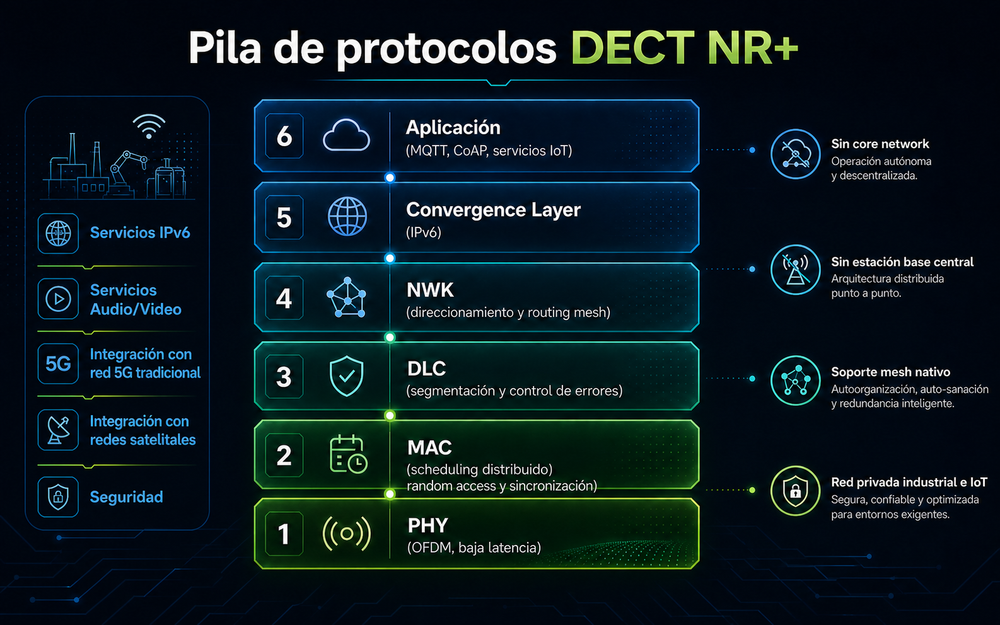

Despliegue rápido
No necesita core network ni tarjetas SIM, simplificando la puesta en servicio.
DECT NR+ es una tecnología 5G no celular especialmente interesante cuando el proyecto necesita una red privada propia, estable y preparada para operar sin depender de una arquitectura celular convencional.
Su enfoque distribuido facilita desplegar sensórica, telemetría, actuadores y servicios de campo con una arquitectura que puede crecer por fases, adaptarse al entorno operativo y mantener una lógica de implantación mucho más ligera.
Pero su valor no se limita al IoT. DECT NR+ también puede transportar voz, vídeo en streaming y servicios IP donde se combinan una latencia muy baja con una transmisión elevada de información, algo especialmente útil en aplicaciones de vídeo, voz y operación remota.
Para Qartia, DECT NR+ encaja especialmente bien en industria, medioambiente, agricultura e infraestructura civil, aplicaciones de audio/video, y servicios sobre IP, donde la robustez radio, la autonomía del despliegue, la continuidad del dato y la capacidad de soportar servicios en tiempo real condicionan la calidad de la decisión.
Esta página resume sus principales capacidades, la pila de protocolos y el tipo de escenarios donde aporta más valor dentro de una estrategia de redes privadas 5G.
No necesita core network ni tarjetas SIM, simplificando la puesta en servicio.
Soporta redes malladas y multi-hop para ampliar alcance y robustez del servicio.
Combina comunicaciones fiables con densidad de nodos y soporte para voz, audio y otros servicios IP exigentes.
Puede operar en bandas DECT, licenciadas o compartidas según el país y el caso.
Muchos proyectos necesitan más autonomía en despliegue, evolución y gestión de la red.
La necesidad de core, SIM y arquitectura más pesada puede ralentizar implantaciones pequeñas o distribuidas.
Entornos industriales, rurales o de infraestructuras remotas requieren topologías más flexibles y adaptativas.
No todos los proyectos arrancan con una red grande; muchas veces conviene crecer de forma modular.
Hay casos donde la red no solo debe cubrir, sino mantener continuidad y tiempos de respuesta controlados.
En muchos proyectos la misma red debe soportar telemetría, alarmas, voz, audio en streaming, vídeo y otros servicios IP con requisitos distintos.
OFDM, baja latencia y mecanismos robustos de transmisión para operar con continuidad.
La red gestiona recursos y asociaciones sin una lógica central rígida.
Los nodos pueden extender cobertura y mejorar resiliencia mediante topologías malladas.
La red se conecta con plataformas, gateways y aplicaciones industriales para llevar telemetría, voz, audio en streaming, vídeo y otros servicios sobre IPv6.
No requiere core network ni tarjetas SIM, reduciendo complejidad y dependencia externa.
Su motor radio está orientado tanto a casos de baja latencia como a escenarios con más caudal y muchos nodos conectados.
OFDM, corrección avanzada de errores y retransmisiones HARQ refuerzan la fiabilidad del enlace.
Combina acceso programado y aleatorio en TDD, con Listen Before Talk para convivir mejor con otros sistemas.
Puede integrarse con la red 5G tradicional y con comunicaciones satelitales para extender cobertura, salida a Internet y continuidad de servicio.
La misma red puede servir para telemetría, alarmas, voz, audio en streaming, vídeo y otros servicios IP con necesidades exigentes, yendo mucho más allá de una red IoT tradicional.
DECT NR+ puede trabajar en la banda DECT de 1,9 GHz, así como en bandas licenciadas o compartidas como 3,7–3,8 GHz y 3,8–4,2 GHz, según regulación y país.
Esto permite construir soluciones privadas que van mucho más allá de una red IoT tradicional: la misma infraestructura puede dar soporte a datos, voz, audio en streaming, vídeo y servicios IP de operación crítica.

Qartia puede llevar este enfoque a una arquitectura concreta, con estudio de cobertura, definición de red, integración con dispositivos y puesta en servicio en campo.